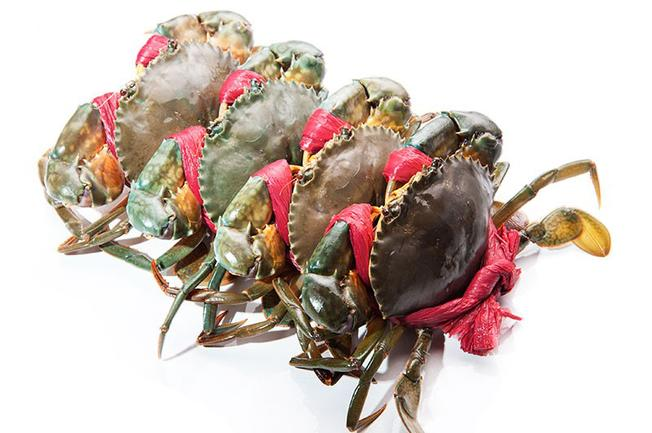

.png)

Giới thiệu về cua Cà Mau
Cua Cà Mau là một loài đặc sản tuyệt vời, quà tặng từ thiên nhiên mang đến cho con người. Cua Cà Mau được xem loại cua biển là ngon nhất nước. Thịt cua vừa thơm, vừa ngọt, không quá béo, bùi, chắc nịch. Còn gạch cua béo ngậy, ngây ngất đầu lưỡi. Người Cà Mau tự hào có được đặc sản cua biển để tiếp đón khách quý, hay làm quà mỗi khi thăm viếng người thân ở các tỉnh, thành khác.

*Cách phân biệt Cua Cà Mau chính gốc
-Cách phân biệt Cua Biển Cà Mau với Cua nuôi công nghiệp :
+ Dùng ngón tay cái bóp mạnh bụng, nếu là Cua Cà Mau bụng sẽ cứng dù bạn cố sức, cua nuôi công nghiệp trong
các ao, đầm cho dù tới lúc thu hoạch vẫn mềm mềm.
+ Cua Cà Mau sậm màu, vỏ chắc, không phải màu trắng, trong xanh như cua nuôi công nghiệp. Cua Cà Mau mạnhkhỏe
chỉ cho uống nước có thể để sống thêm 3-5 ngày.
-Tại sao cua bán ngoài đường giá rẻ :
+ Cua nuôi công nghiệp nếu phát hiện bệnh sớm sẽ thu hoạch bằng bất cứ giá nào nên cua còn ốp, không chắc
thịt,cua bị khờ và trên cái mai ngả vàng do chạy gạch, chỉ bán trong ngày chứ qua đêm rất mau chết.
-Cách bảo quản để cua sống lâu :
+ Cầm dây phía sau con cua, tránh cầm cái càng cua nha mọi người, dễ gãy càng làm cua nhanh chết. Đổ ngập
nước
rồi chắc nước ra bỏ nhằm làm sạch nước đái cua. Đổ ngập nước lại lần nữa cho cua uống khoảng 2-3 phút thì đổ
nước ra để ráo. Ngày làm 1 lần, ko để cua uống nước lâu quá cua sẽ yếu nhanh chết hơn. Làm đúng như vậy cua
sẽ
sống được từ 2-4 ngày.